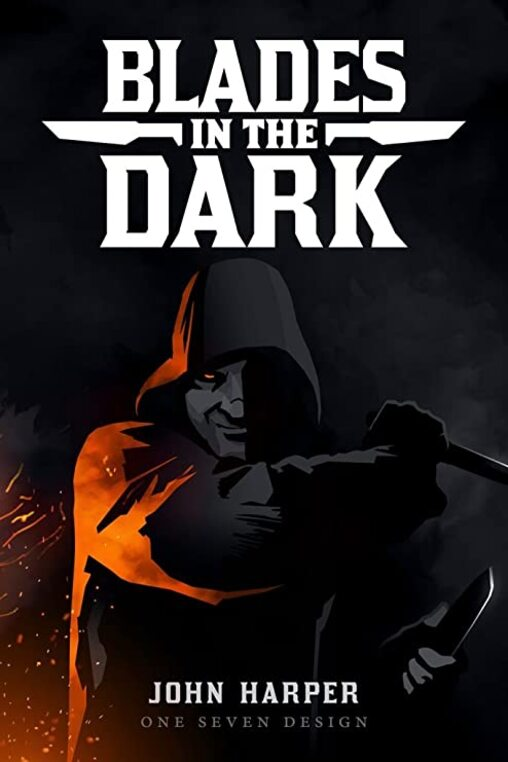
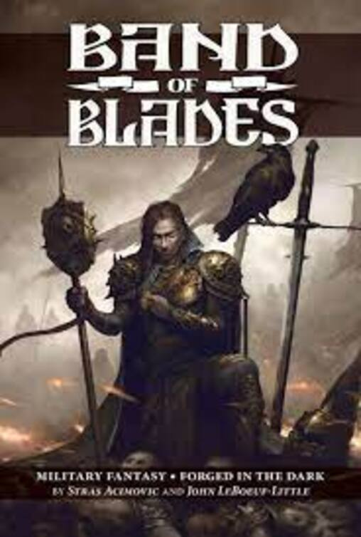
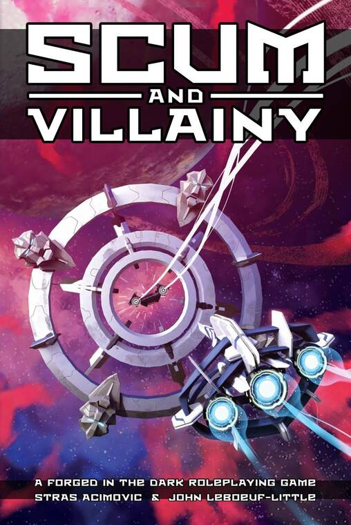

Blades in the dark es un juego en el que los participantes toman el control de una banda de intrépidos personajes donde, junto al narrador, tratan de averiguar si las futuras fechorías de la banda pueden llevarlos al éxito a pesar de los constantes peligros que los acechan. La diferencia con otros juegos de rol, es que además de los personajes, los jugadores deben crear a la banda que los representara en el juego, que es un ente más en el dinámico mundo que debe manejar tanto el narrador como los jugadores. Esto es porque Blades in the dark no es una experiencia demasiado estructurada, en muchos sentidos es co-narrativo. Una sesión de este juego se debe pensar como un programa de televisión, en donde en cada episodio, los personajes se proponen lograr algo y a medida que se va jugando, tanto el narrador como los jugadores, llegan a conocer el muchas veces sorpresivo final de la aventura de ese capítulo.
La aventura se basa en la respuesta a distintas preguntas que tanto el narrador como los jugadores deben responder. En conjunto con esto, se juega con dados de 6 caras, donde se averigua si la acción a realizar es un éxito rotundo, un éxito medio o un fallo. En la sesión hay dos fases distintivas, el tiempo libre, donde los personajes deciden que hacer y cómo prepararse para su próximo objetivo. Y la fase del golpe, donde los personajes se reúnen a tratar de cumplir con su objetivo de la mejor manera posible.
En Band of Blades, los jugadores se unen como miembros de una legión, la cual está perdiendo la guerra ante los muertos vivientes. En una lucha contra el tiempo y tratando de sobrevivir lo más posible, es tarea de los jugadores el tomar decisiones difíciles, realizar apuestas arriesgadas y ser lo suficientemente ingeniosos y creativos para armar una defensa que aguante lo suficiente como para que les permita al ejercito de los vivos pelear un día más. Esta tragedia militar ocupa los flexibles elementos de Blades in the dark para generar un ambiente tenso en el que cada decisión es importante.
Scum and Villainy es una fantasía espacial en la que tú y tu tripulación deben oponerse al mandato con puño de hierro de la Hegemonía Galáctica. Los jugadores deben trabajar juntos para afianzar a la tripulación y crecer junto a esta ante la amenaza de poderos grupos criminales, peligrosos alienígenas y los misterios del espacio. El sistema de Blades in the Dark se aplica perfectamente a este relato ya que los jugadores cuentan con la libertad de decidir cuál es la mejor opción para que la tripulación gane poder e influencia. Desde explorar ruinas de civilizaciones antiguas en busca de extraños artefactos espaciales a liberar un planeta de la Hegemonía Galáctica y ganar aliados. Cada aventura contribuye al crecimiento del grupo y en cada una la tripulación apuesta su vida para conseguir sus objetivos.
